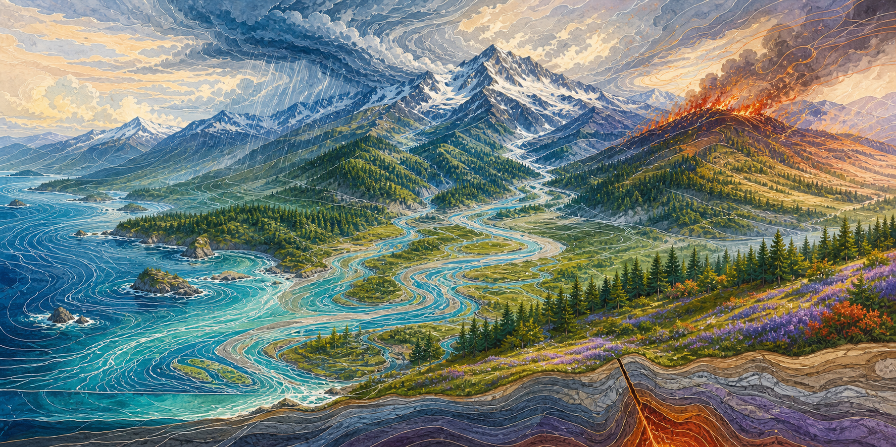

The Cascadia guidebook
Four guides.
Four different clocks.
Each hazard keeps its own clock. The landscape and the households living across it remain one continuous story.

Land shapes water. Weather moves through both. Fire follows fuel, terrain, and wind. Political boundaries decide who issues an instruction; they do not separate the physical system.
Continue reading
The guide is one part of the work.
When conditions are changing, the Regional Hazard Atlas brings connected reports, observations, forecasts, and planning layers into one view. It supports orientation; local authorities remain the source for instructions.
When you are ready to turn reading into household work, Build Your Kit helps you think through water, safe warmth, communication, medicine, mobility, animals, and the people your plan must actually serve.